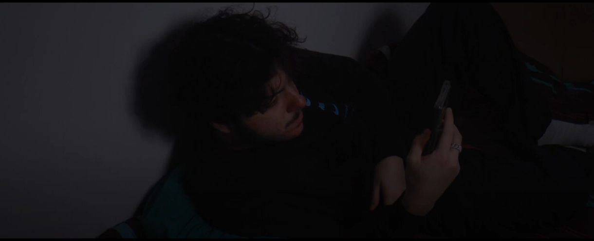
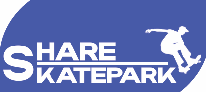
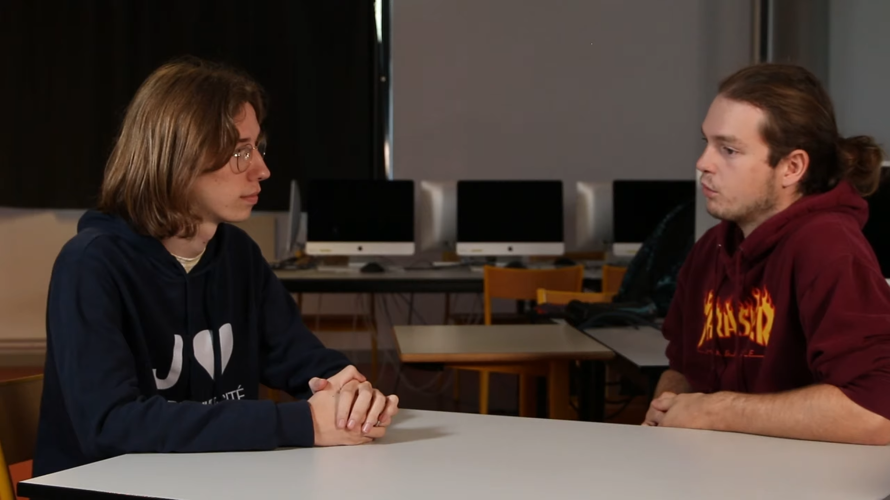

Mes productions en BUT MMI
Voici plusieurs des mes réalisation faites durant mes deux premières années en BUT MMI à Elbeuf

Réalisation d'un site vitrine sur un Food Truck Fictif, L'Afterlife

Production d'un tabkeau de bord d'accidentologie de la Lozère

Réalisation d'un court-métrage pour le Deauville Green Awards

Création de logotype, one-page & affiche de Share Skatepark

Production d'une interview sur la vie en BUT MMI